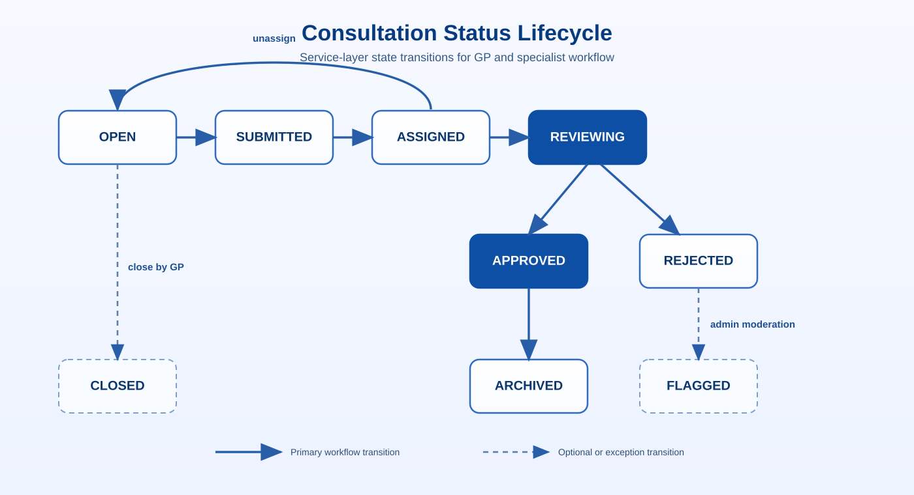

GP Workflow
Section 3 of 12 · Back to Implementation
Libraries Used
| Library | Purpose |
|---|---|
FastAPI | Route definition, request body parsing, background tasks |
Pydantic v2 | Request/response schema validation with automatic error messages |
SQLAlchemy | ORM query building |
Overview
A GP submits a validated ChatCreate payload, the service writes consultation and first-message records in one controlled path, then triggers AI generation asynchronously. Status changes are enforced by explicit rules so transitions remain consistent across GP and specialist actions. Every write is paired with audit logging so each consultation has a traceable origin even if generation later fails.
This keeps the UI responsive during long model calls while maintaining a reliable workflow state model. It prevents ambiguous consultation states and makes downstream review, notification, and auditing behavior predictable for clinical teams.
Creating a Consultation
A GP creates a consultation by sending a ChatCreate payload. FastAPI validates it via Pydantic before the handler runs. The service creates the chat row, the first message row, and schedules AI generation as a BackgroundTask so the HTTP response returns immediately:
# backend/src/schemas/chat.py
class ChatCreate(BaseModel):
title: str = Field(..., min_length=1, max_length=200)
specialty: str | None = None
severity: str | None = None
patient_context: dict | None = None # {age, gender, notes}
message: str = Field(..., min_length=1, max_length=10_000)# backend/src/services/chat_service.py
def create_chat(db: Session, user: User, data: ChatCreate) -> ChatResponse:
chat = chat_repository.create(
db,
user_id=user.id,
title=data.title,
specialty=data.specialty,
severity=data.severity,
patient_context=data.patient_context,
status=ChatStatus.SUBMITTED,
)
message_repository.create(
db,
chat_id=chat.id,
content=data.message,
sender="user",
)
audit_repository.log(
db, user_id=user.id, action="CREATE_CHAT",
details=f"Chat {chat.id} created",
)
# AI generation runs in the background — does not block this response
asyncio.ensure_future(
_async_generate_ai_response(chat.id, user.id, data.message)
)
return chat_to_response(chat)The synchronous write path finishes chat + first-message persistence before launching generation. This guarantees every generation task has a stable consultation context and audit anchor even if generation later fails.
Returning immediately after task scheduling keeps GP interactions responsive; the user does not wait on retrieval/model latency to continue working.
Consultation Status Lifecycle
Status transitions are enforced at the service layer. The full state machine:

The solid transitions represent the normal workflow path during consultation processing. Dashed transitions represent optional or exception paths that appear in specific operational contexts.
Additional status values:
CLOSED— consultations closed by the GP before specialist reviewFLAGGED— reserved for admin moderation use casesARCHIVED— soft-deleted; hidden from normal queries but retained for audit purposes
Auto-Submit & Async Background Generation
When a GP sends the first message in an OPEN consultation, the backend automatically transitions the chat to SUBMITTED and starts AI generation asynchronously. This removes a dedicated “submit” step from the normal GP flow while preserving explicit status transitions in audit logs.
# backend/src/services/chat_service.py
if chat.status == ChatStatus.OPEN:
await chat_repository.async_update(db, chat, status=ChatStatus.SUBMITTED)
await audit_repository.async_log(
db, user_id=user.id, action="AUTO_SUBMIT_FOR_REVIEW",
details=f"Chat {chat_id} auto-submitted after first GP message",
)
task = asyncio.create_task(
_async_generate_ai_response(chat.id, user.id, content),
name=f"ai-gen-chat-{chat.id}",
)
task.add_done_callback(_on_generation_task_done)The manual submit endpoint still exists for explicit workflows, but the auto-submit path is the primary path in normal operation.
AUTO_SUBMIT_FOR_REVIEW means that when AI generation completes successfully, the chat is automatically moved to SUBMITTED status so specialists can see it in their queue without the GP needing to perform a separate submit action. In the original design, GPs were required to explicitly submit a consultation after receiving the AI response, creating an extra step where a GP could read the AI answer and forget to forward it for specialist review. The auto-submit path removes that friction: the moment a GP sends their first message, the consultation enters the specialist queue automatically and appears for review as soon as the AI response is ready. The GP can still view their consultation and the AI response; the auto-submit only controls visibility to specialists and does not prevent GP interaction. The explicit audit log entry for AUTO_SUBMIT_FOR_REVIEW ensures the transition is traceable even though no GP action triggered it.
The background task callback logs any unhandled task exception so failures are visible in server logs even though the HTTP request has already returned.
Generation is detached from the HTTP response because LLM calls through the RAG service can take between 10 and 30 seconds depending on query complexity, model routing, and available GPU capacity. If the HTTP handler waited for the generation to complete before returning, the client would see a request hanging for up to 30 seconds before receiving any response — most browser and proxy timeout configurations would cancel the connection before the response arrived, causing the GP to retry the submission and potentially triggering duplicate generations. By launching generation as an async background task and returning the consultation record immediately, the HTTP response is typically delivered in under one second. The actual response tokens arrive progressively via SSE, which has an independent connection lifecycle unaffected by the original HTTP request timeout.
A concurrency guard checks whether a generating message already exists for the same chat before starting generation. This prevents duplicate AI responses when clients retry a message request after a transport-level failure.
In test environments, an INLINE_AI_TASKS mode runs generation inline in the request cycle, making deterministic assertions possible without waiting for background task completion.